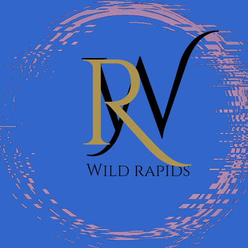

Overview
Purpose
White water rafting serves a multifaceted purpose, encompassing recreation, social interaction, physical fitness, mental well-being, environmental appreciation, and economic impact. It is an activity that caters to individuals seeking adventure, teamwork, and a connection with nature.
Audience
Whether you're an adventure seeker craving the thrill of conquering rapids, an outdoor enthusiast yearning to immerse yourself in stunning landscapes, part of a team-building group seeking shared challenges, a student eager for an educational and exciting journey, a tourist looking to experience local beauty, a fitness enthusiast ready to combine strength with exhilaration, a family in search of shared stories, an individual seeking personal growth through conquering fears, an environmental enthusiast wanting to connect with nature, or anyone in between, our tailored experiences cater to all.
Branding
Website logo
Style Guide
Color Palette
Typography
Headings Example Font
Normal Text/Paragraph Example Font
Colored Callout Example Font
Navigation
Wireframes
Home Page Wireframe

About Us Page Wireframe